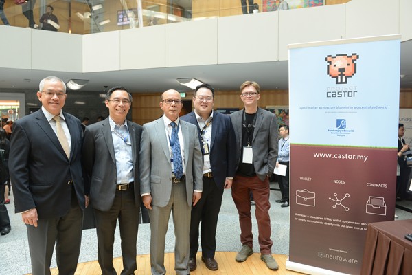
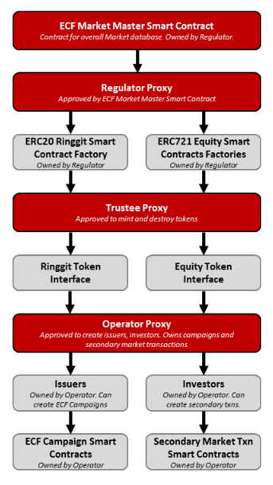
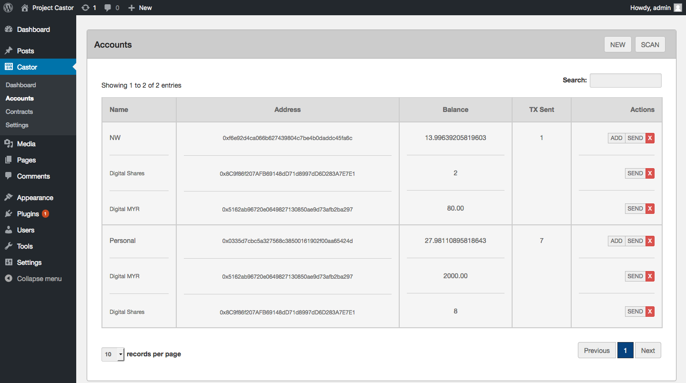

Background
The engagement with the Securities Commission of Malaysia began with blockchain education: workshops explaining distributed ledger technology to regulators who would ultimately need to write policy around it. Over two years, through R1's training and consulting division, the relationship evolved from education into extensive technical workshops and eventually a feasibility study for decentralised secondary markets.
This wasn't a typical consulting engagement. The SC needed to understand blockchain deeply enough to regulate it intelligently. Not just the financial risks, but the technical architecture, the on-chain/off-chain tradeoffs, and what was genuinely possible versus what was marketing hype.
Technical Work
The project utilised Neuroware's Cortex product to manage network infrastructure and demonstrate working implementations. The system incorporated:
- Digital identities — on-chain identity primitives suitable for regulated environments
- Token factories — supporting both fungible (ERC-20) and non-fungible (ERC-721) assets representing different financial instruments
- Standalone compliance contracts — escrow, KYC, and AML functionality as discrete, auditable smart contracts
- Upgradeable architecture — permission-based contract upgrades allowing iteration without losing state or breaking compliance
- Database-free applications — login, media management, and analytics all operating without stored credentials


Evolution
The blockchain architecture went through two stages during the engagement:
- Stage one: Dogecoin — used as distributed key-value storage, proving the concept of on-chain data management in the simplest possible environment
- Stage two: Ethereum — migration to leverage ERC-20 and ERC-721 standards, enabling investors to use standard-compatible wallets and unlocking programmable compliance logic via smart contracts
The modular design was deliberate, demonstrating to the SC that blockchain applications for capital markets weren't monolithic systems but composable components that could be applied across different financial products: equity crowdfunding, bond issuance, secondary market trading.

Regulatory Impact
Project Castor directly informed the Securities Commission's blockchain blueprint and led to the creation of Malaysia's Digital Asset Custodian regulatory framework. The same framework under which CoKeeps later became the first approved custodian in 2023.
The work also earned Neuroware/R1 the Digerati50 recognition (Malaysia's top 50 digital companies), acknowledging the contribution to national digital infrastructure policy.
The path from "educating regulators" to "regulation exists and companies are approved under it" took five years in total. Project Castor was the critical middle phase. The point where theory became demonstrated capability, and regulators gained enough technical confidence to write frameworks rather than blanket bans.